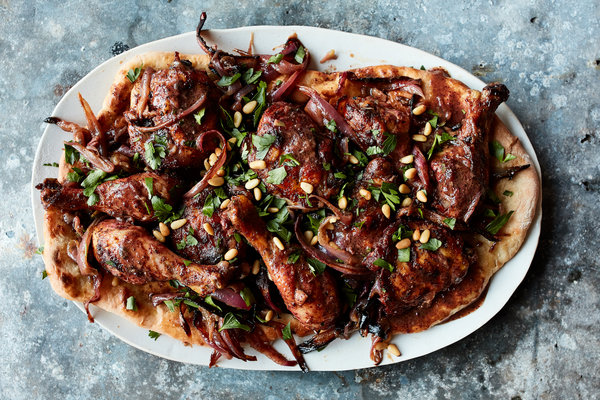

Sumac Chicken

Description
Apparently this is a Palestinian dish. It goes great with a flat bread like
pita and typical Mediterranean sides like hummus, olives, and tomato-cucumber salad.
Sumac is available by mail-order if you can't find it in your supermarket. Top with yogurt sauce.
Ingredients
- 4 pieces of chicken
- 2 tablespoons of olive oil
- 1 red onion, coarsely sliced
- 1 clove garlic, minced
- 2 tablespoons sumac
- 1 tablespoon lemon juice
- salt and pepper to taste
Steps
- In a bowl combine the oil, garlic, sumac, lemon juice, salt and pepper.
- Coat the chicken with this mixture, add the onion, and let it marinade >4 hours in the fridge. (24 hrs is fine.)
- Preheat the oven to 200 Celsius.
- Spread out the marinaded chicken and onions on a sheetpan lined with baking paper or foil and bake for 25 minutes in the oven.
Back to the recipe list.